library(gsheet)
library(tidyverse)
library(ggthemes)
library(ggplot2)
library(DT)
library(readxl)
library(r4pde)Estatística Descritiva
A Estatística descritiva sintetiza informações sobre um conjunto de observações, sendo a primeira etapa do processo analítico, para descrever e resumir od dados, assim como a visualização destes através de textos, gráficos e tabelas.
Parâmetros de Tendência Central
Média Aritmética
Descritor a tendência central da distribuição da população ou da amostra em estatística paramétrica. A média amostral tende a se aproximar da média verdadeira da população, com o aumento do número de amostras usadas. A distribuição da amostra deve ser semelhante ao da população, para assim estimar a tendência central da população. Assim, sempre deve-se chegar no tamanho de amostra mínima ao qual as inferências podem ser confiáveis para haver a extrapolação para a população. Quanto mais normal a curva de distribuição das amostras, mais a média, mediana e moda são próximas.
Mediana
Observação ou média de duas observações no meio de uma série crescente de dados. É um descritor da distribuição da população em estatística não paramétrica, sendo mais robusta, ou seja menos influênciada pela presença de outliers. Quanto mais distante da média, menos normal a distribuição da população será.
Parâmetros de Dispersão dos Dados
Desvios ou Erros
Distância de uma observação da média da amostra ou população. Dados observados de uma repetição do ensaio – média amostral
Variância
Média dos quadrados dos desvio, é o parâmetro mais comum de dispersão dos dados, sugere a magnitude de dispersão dos dados, sendo utilizado para cálculo dos desvios padrões. O denominador pode ser n - 1 (número de observações independentes) para não subestimar ou tornar viciada a estatítica.
Desvio Padrão
Raís quadrada da variância, padroniza e diminui o parâmetro. Descreve a dispersão dos dados em torno da média, ou seja quão próximo os valores observados estão da média. Somando-se os desvios chegamos a 0.
Variação da Estimativa da Média
Erro Padrão da Média ou Desvios Padrão da Média
Variabilidade da estimativa da média, ou seja quão precisa é a estimativa da média, descrevendo assim a precisão com que a média amostral estima a média da população. Quanto mais precia a média amostral da população menor é erro padrão. Pode-se utilizar n-1, para redução do número de observações independentes.
Variabilidade dos Dados
Coeficiente de Variação
Indica a precisão do experimento em porcentagem, sendo uma medida de padronização de dispersão de uma distribuição de probabilidade ou de uma distribuição de frequências. Ensaios com coeficiente de variação altos, indica que talvés a diferença estatística não seja por conta dos tratamentos.
Processual dos Cálculos
Cálculo de alguns parâmetros de estatítica descritiva
CArregamento dos pacotes
dados <- gsheet2tbl("https://docs.google.com/spreadsheets/d/1t1oOnimLXdx6rqtDiYg6wNXB2byY8_Z-/edit?gid=1737712336#gid=1737712336")
dat1 <- dados %>%
dplyr::group_by(TRATAMENTO) %>%
summarise(
mean_SEVERIDADE = mean (SEVERIDADE),
sd_SEVERIDADE = sd (SEVERIDADE),
var_SEVERIDADE = var (SEVERIDADE),
n = n (),
se_SEVERIDADE = (sd_SEVERIDADE/ sqrt (n)),
ci = se_SEVERIDADE * qt(0.025, df = 9))
datatable(dat1)# ou
summary(dados$SEVERIDADE) Min. 1st Qu. Median Mean 3rd Qu. Max.
0.15 1.50 3.00 12.39 13.88 87.00 Visualização dos Dados
A classificação das variáveis é extremamente importante para o tipo de visualização de dados que queremos mostar.
Tipos de Variáveis respostas em função dos dados
- Variável Quantitativa (Numérica) Dados quantitativos são aqueles que representam uma quantidade ou valor numérico. Eles podem ser divididos em duas subcategorias:
Dados Contínuos: Podem assumir qualquer valor dentro de um intervalo contínuo. Exemplo: Severidade da Doença - A porcentagem da área foliar afetada por uma doença. Este valor pode variar continuamente de 0% a 100%..
Dados Discretos: São contagens ou valores inteiros que não podem ser subdivididos. Exemplo: Número de Lesões - Contagem de lesões visíveis em uma folha.
- Variável Qualitativa (Categórica) Dados qualitativos descrevem categorias ou qualidades e não têm uma ordem natural. Eles podem ser divididos em duas subcategorias:
Dados Nominais: Representam categorias sem uma ordem intrínseca. Exemplos: Tipos de Doenças- Classificação das doenças com base no patógeno causador (por exemplo, doenças fúngicas, bacterianas, virais).
Dados Ordinais: Representam categorias que têm uma ordem natural, mas a diferença entre as categorias não é uniformemente mensurável. Exemplo: Classificação de variedades de trigo como “resistente”, “moderadamente resistente” ou “susceptível” à ferrugem do caule.
Gráficos
Box plots
theme_set(r4pde::theme_r4pde(font_size = 10))
df4 <- gsheet2tbl("https://docs.google.com/spreadsheets/d/1bq2N19DcZdtax2fQW9OHSGMR0X2__Z9T/edit?gid=983033137#gid=983033137")
df4|>
ggplot(aes (trat, comp)) +
geom_boxplot(outlier.colour=NA, fill= "grey")+
geom_jitter(width = 0.05, color = "black", shape = 1, size = 1) +
scale_y_continuous(limits = c(0, 20), n.breaks = 10)+
#ylim(0,20)+
labs(x = "Tratamento", y = "Comprimento (mm)", title = "", caption = "Fonte: Leonardo Packer de Quadros")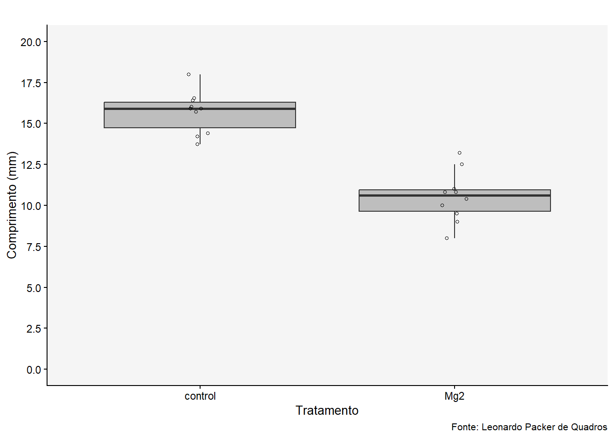
Histogramas
df<- read_csv("https://raw.githubusercontent.com/emdelponte/paper-coffee-rust-Ethiopia/master/data/survey_clean.csv")
df |>
ggplot(aes(x = inc))+
geom_histogram()
Gráfico de pontos
mg <- gsheet2tbl("https://docs.google.com/spreadsheets/d/1bq2N19DcZdtax2fQW9OHSGMR0X2__Z9T/edit#gid=983033137")
mg|>
ggplot(aes(trat, comp))+
geom_jitter(width = 0.1)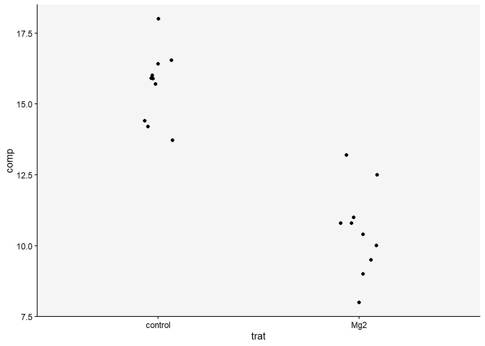
df|>
ggplot(aes(inc, sev2))+
geom_point()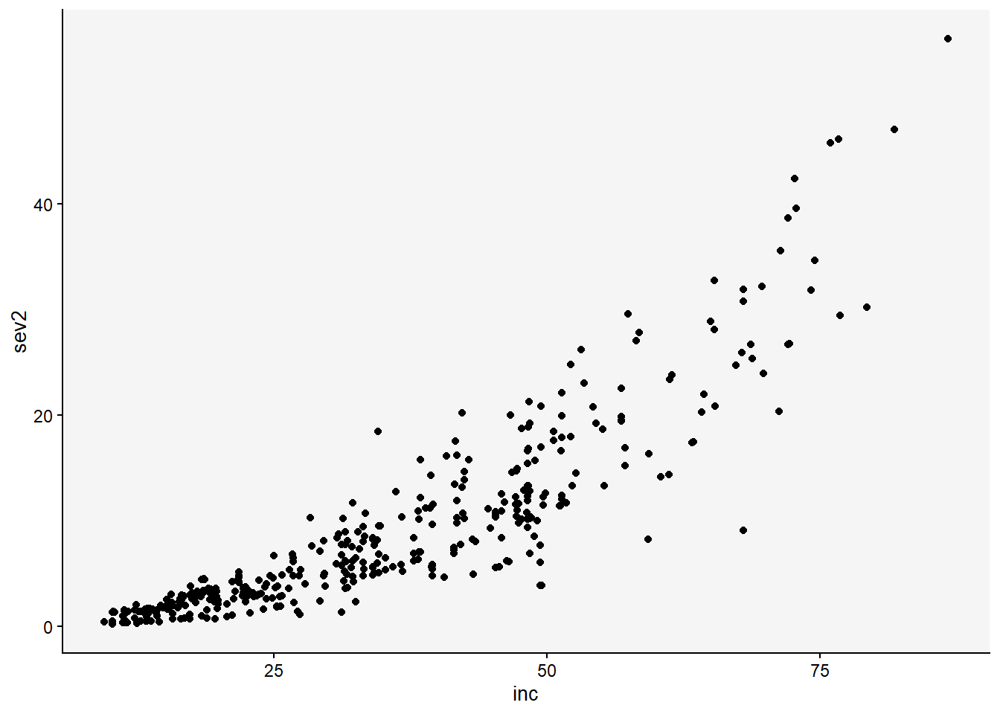
Gráfico de linhas
pepper <-
tribble(
~t, ~`1`, ~`2`, ~`3`,
0, 0.08, 0.001, 0.001,
7, 0.13, 0.01, 0.001,
14, 0.78, 0.09, 0.01,
21, 0.92, 0.25, 0.05,
28, 0.99, 0.8, 0.18,
35, 0.995, 0.98, 0.34,
42, 0.999, 0.99, 0.48,
49, 0.999, 0.999, 0.74
)
pepper |>
pivot_longer(2:4, names_to = "epidemic",
values_to = "inc")|>
ggplot (aes(t, inc, color = epidemic)) +
geom_point()+
geom_line()+
annotate(geom = "text",
x = 12,
y = 0.75,
label = "1")+
annotate(geom = "text",
x= 25,
y= 0.75,
label = "2")+
theme(legend.position = "none")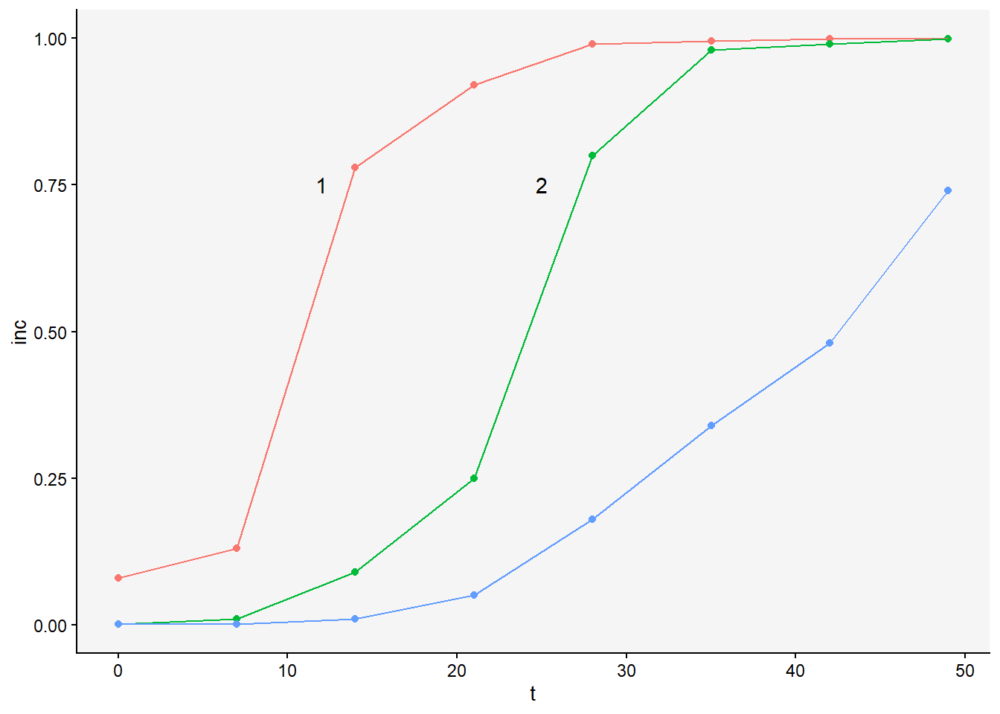
pepper |>
pivot_longer(2:4, names_to ="treat", values_to = "inc") |>
ggplot (aes(t, inc,
linetype = treat,
shape = treat,
group = treat))+
scale_color_grey()+
geom_line(linewidth = 1)+
geom_point(size =3, shape = 16)+
annotate(geom = "text", x = 15, y = 0.84, label = "1")+
annotate(geom = "text", x = 23, y = 0.6, label = "2")+
annotate(geom = "text", x = 32, y = 0.33, label = "3")+
labs(y = "Disease incidence (y)",
x = "Time (days)")+
theme(legend.position = "none")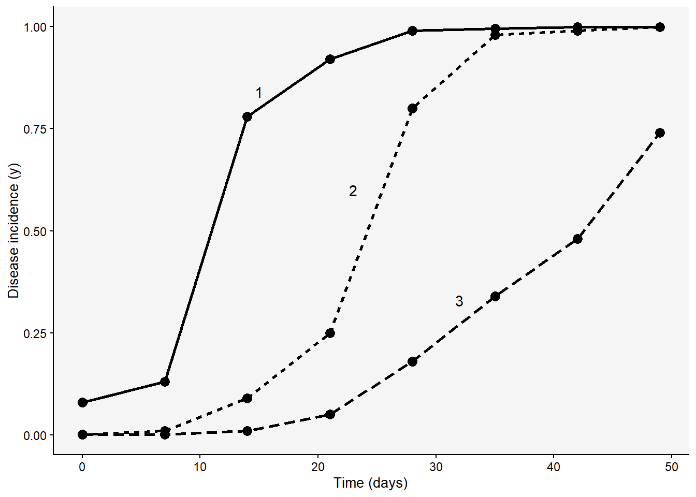
Tabela de Contingência
cr<-read_csv("https://raw.githubusercontent.com/emdelponte/paper-coffee-rust-Ethiopia/master/data/survey_clean.csv")
cr# A tibble: 405 × 13
farm region zone district lon lat altitude cultivar shade
<dbl> <chr> <chr> <chr> <dbl> <dbl> <dbl> <chr> <chr>
1 1 SNNPR Bench Maji Debub Bench 35.4 6.90 1100 Local Sun
2 2 SNNPR Bench Maji Debub Bench 35.4 6.90 1342 Mixture Mid shade
3 3 SNNPR Bench Maji Debub Bench 35.4 6.90 1434 Mixture Mid shade
4 4 SNNPR Bench Maji Debub Bench 35.4 6.90 1100 Local Sun
5 5 SNNPR Bench Maji Debub Bench 35.4 6.90 1400 Local Sun
6 6 SNNPR Bench Maji Debub Bench 35.4 6.90 1342 Mixture Mid shade
7 7 SNNPR Bench Maji Debub Bench 35.4 6.90 1432 Mixture Mid shade
8 8 SNNPR Bench Maji Debub Bench 35.4 6.90 1100 Local Sun
9 9 SNNPR Bench Maji Debub Bench 35.4 6.89 1400 Local Sun
10 10 SNNPR Bench Maji Debub Bench 35.4 6.88 1342 Mixture Mid shade
# ℹ 395 more rows
# ℹ 4 more variables: cropping_system <chr>, farm_management <chr>, inc <dbl>,
# sev2 <dbl>cr|>
count(region)# A tibble: 2 × 2
region n
<chr> <int>
1 Oromia 165
2 SNNPR 240cr|>
count(zone, region)# A tibble: 9 × 3
zone region n
<chr> <chr> <int>
1 Bale Oromia 30
2 Bench Maji SNNPR 45
3 Gedio SNNPR 45
4 Ilu AbaBora Oromia 45
5 Jimma Oromia 45
6 Keffa SNNPR 45
7 Sheka SNNPR 45
8 Sidama SNNPR 60
9 West Wellega Oromia 45Gráfico de diagramas de barras
library(janitor)
#trasnformando em pecentagem a minha contagem
cr|>
tabyl(region, zone) region Bale Bench Maji Gedio Ilu AbaBora Jimma Keffa Sheka Sidama West Wellega
Oromia 30 0 0 45 45 0 0 0 45
SNNPR 0 45 45 0 0 45 45 60 0cr|>
count(farm_management, cultivar)|>
ggplot(aes(cultivar, n, fill = farm_management))+
geom_col(postion = "dodge2")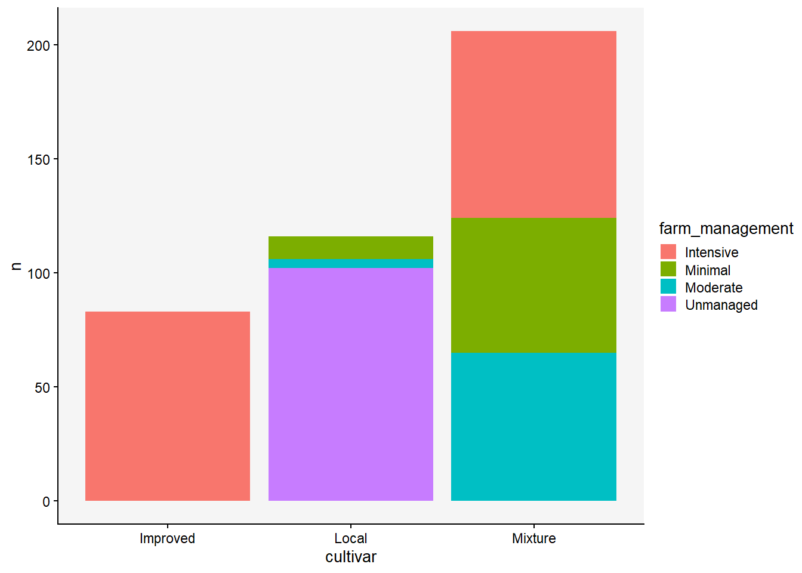
cr|>
count(farm_management, cultivar)|>
ggplot(aes(cultivar, n, fill = farm_management))+
geom_col(postion = "dodge2")+
scale_fill_calc()+
facet_wrap(~cultivar, scales="free_x")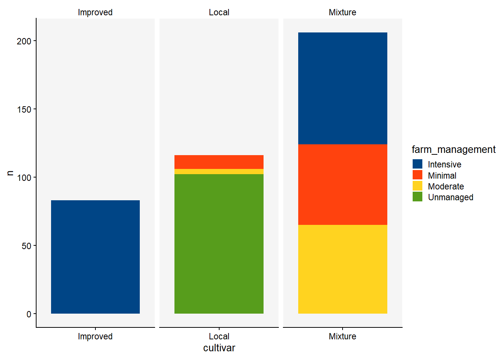
cr|>
count(farm_management, cultivar)|>
ggplot(aes(cultivar, n, fill = farm_management, label = n))+
geom_col(position = "dodge2")+
theme(strip.text.x = element_blank(), legend.position = "top")+
facet_wrap(~cultivar, scales="free_x")+
geom_text(position = position_dodge(width = 0.9))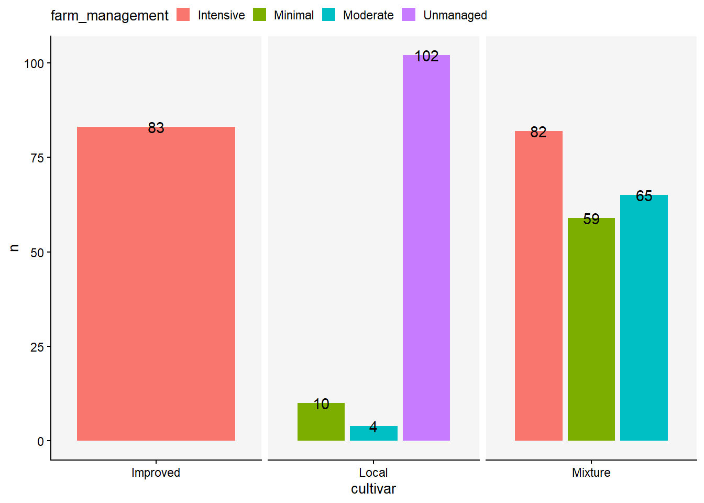
Gráfico de Barras com barras de erros
mg <- gsheet2tbl("https://docs.google.com/spreadsheets/d/1bq2N19DcZdtax2fQW9OHSGMR0X2__Z9T/edit#gid=983033137")
mg |>
group_by (trat)|>
summarize(mean_comp = mean(comp), sd_comp = sd (comp)) |>
ggplot(aes(trat, mean_comp))+
geom_col(fill = "steelblue", width = 0.5) +
geom_errorbar(aes (ymin = mean_comp - sd_comp,
ymax = mean_comp + sd_comp), width = 0.1)+
geom_point(size = 2)+
annotate (geom = "text",
x =1, y = 17.5,
label = "*")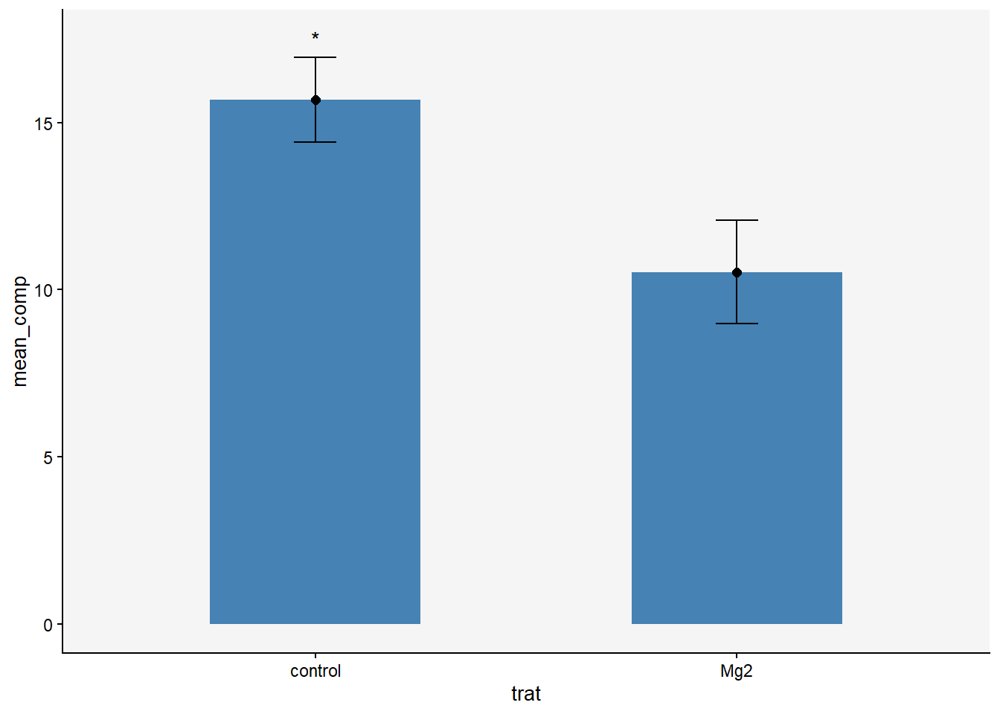
Gráfico de barra de erros
## gráfico de barras, dados de contagem
mg |>
group_by (trat)|>
summarize(mean_comp = mean(comp), sd_comp = sd (comp)) |>
ggplot(aes(trat, mean_comp))+
geom_errorbar(aes (ymin = mean_comp - sd_comp,
ymax = mean_comp + sd_comp), width = 0.1)+
geom_point(size = 2)+
annotate (geom = "text",
x =1, y = 17.5,
label = "*")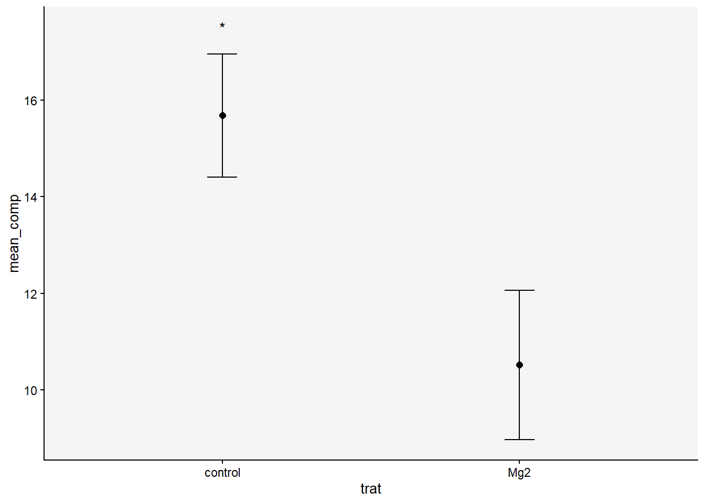
Análise Explortória
A análise exploratória dos dados é uma etapa crucial no processo de investigação científica e da estatística descritiva. Ela ajuda os pesquisadores a obter uma melhor compreensão dos dados coletados, permitindo a identificação de padrões, tendências e possíveis anomalias. A análise exploratória dos dados envolve a sumarização de parâmetros de estatística descritiva, como médias, medianas, variâncias e outros, bem como a criação de gráficos que visualizam esses dados de maneira clara e informativa.
Brincado com visualização de dados
Vamos ver alguns exemplos de análises exploratórias, se utilizando das ferramentas já apresentadas
Desafio 1
df<- read_csv("https://raw.githubusercontent.com/emdelponte/paper-coffee-rust-Ethiopia/master/data/survey_clean.csv")
# mostrar o tipo de variável importada
glimpse(df)Rows: 405
Columns: 13
$ farm <dbl> 1, 2, 3, 4, 5, 6, 7, 8, 9, 10, 11, 12, 13, 14, 15, 16,…
$ region <chr> "SNNPR", "SNNPR", "SNNPR", "SNNPR", "SNNPR", "SNNPR", …
$ zone <chr> "Bench Maji", "Bench Maji", "Bench Maji", "Bench Maji"…
$ district <chr> "Debub Bench", "Debub Bench", "Debub Bench", "Debub Be…
$ lon <dbl> 35.44250, 35.44250, 35.42861, 35.42861, 35.42861, 35.3…
$ lat <dbl> 6.904722, 6.904722, 6.904444, 6.904444, 6.904444, 6.90…
$ altitude <dbl> 1100, 1342, 1434, 1100, 1400, 1342, 1432, 1100, 1400, …
$ cultivar <chr> "Local", "Mixture", "Mixture", "Local", "Local", "Mixt…
$ shade <chr> "Sun", "Mid shade", "Mid shade", "Sun", "Sun", "Mid sh…
$ cropping_system <chr> "Plantation", "Plantation", "Plantation", "Plantation"…
$ farm_management <chr> "Unmanaged", "Minimal", "Minimal", "Unmanaged", "Unman…
$ inc <dbl> 86.70805, 51.34354, 43.20000, 76.70805, 47.15808, 51.3…
$ sev2 <dbl> 55.57986, 17.90349, 8.25120, 46.10154, 12.25167, 19.91…# observar a dispersado o tipo de incidência na área
df |>
ggplot(aes(x = inc))+
geom_histogram()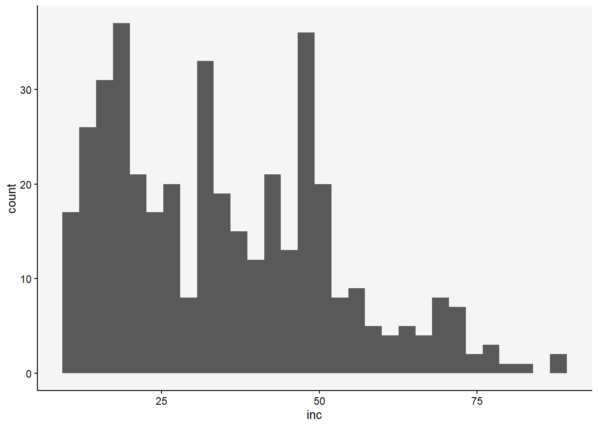
#sumarizar meus parêmetros de estatística descritiva
summary(df$inc) Min. 1st Qu. Median Mean 3rd Qu. Max.
9.50 19.43 32.50 34.89 48.20 86.71 # box plot para ver a incidência geral
df|>
ggplot(aes (x = inc))+
geom_boxplot()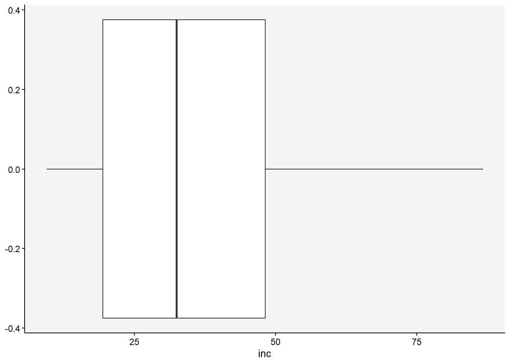
# box plot por região
df|>
ggplot(aes(x=inc))+
geom_histogram()+
facet_wrap(~region)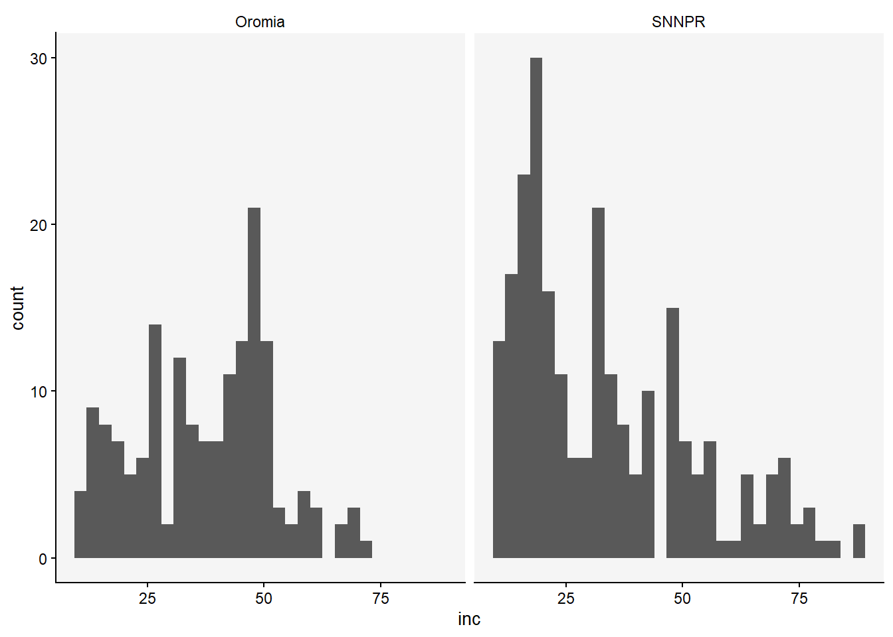
df|>
ggplot(aes(x=inc))+
geom_boxplot()+
facet_wrap(~region)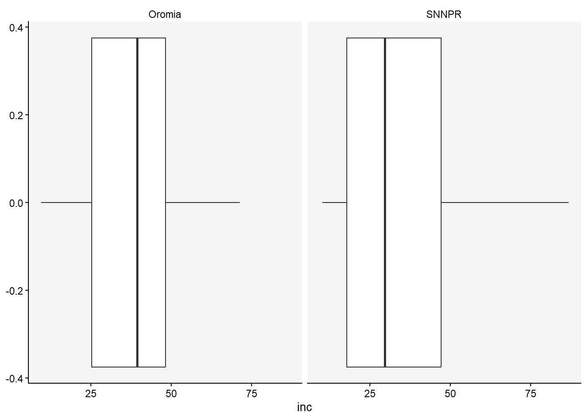
# sumarizar por região
df|>
group_by(region)|>
summarize(inc_mean = mean(inc),
sd_mean = sd(inc),
sd_mean = sd(inc))# A tibble: 2 × 3
region inc_mean sd_mean
<chr> <dbl> <dbl>
1 Oromia 37.0 14.6
2 SNNPR 33.4 18.9## ver severidade em relação a incidência
df|>
ggplot(aes(inc, sev2))+
geom_point()df|>
ggplot(aes(x=sev2))+
geom_histogram()+
facet_wrap(~region)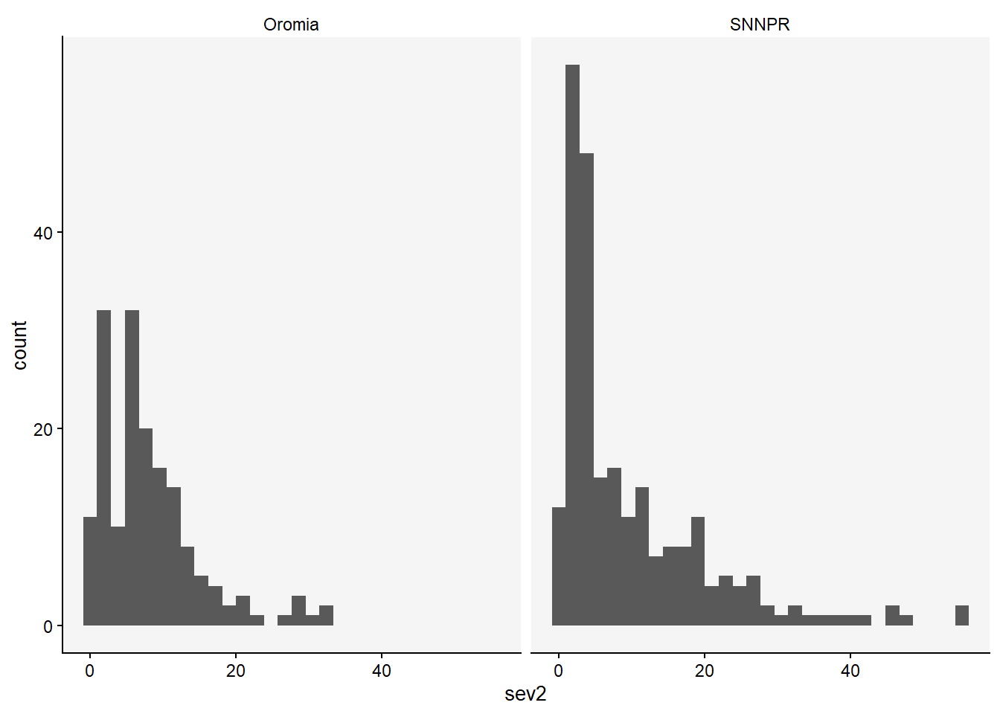
# Valores de média e mediana
df|>
summarise(sev_med = median(sev2), sev_mean = mean(sev2), sev_sd = sd(sev2))# A tibble: 1 × 3
sev_med sev_mean sev_sd
<dbl> <dbl> <dbl>
1 5.95 9.09 9.22#agrupando por cultivar
df|>
group_by(cultivar)|>
summarise(sev_med = median(sev2), sev_mean = mean(sev2), sev_sd = sd(sev2))# A tibble: 3 × 4
cultivar sev_med sev_mean sev_sd
<chr> <dbl> <dbl> <dbl>
1 Improved 1.64 2.16 1.82
2 Local 17.2 18.7 11.1
3 Mixture 5.43 6.47 4.35df|>
ggplot(aes(x=sev2))+
geom_histogram()+
facet_wrap(~cultivar)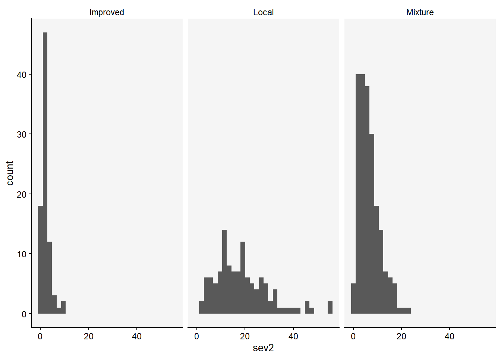
# agrupar por região
df|>
ggplot(aes(x=sev2))+
geom_histogram()+
facet_wrap(~region)
# agrupar região x cultivar
df|>
ggplot(aes(x=sev2))+
geom_histogram()+
facet_wrap(region ~ cultivar)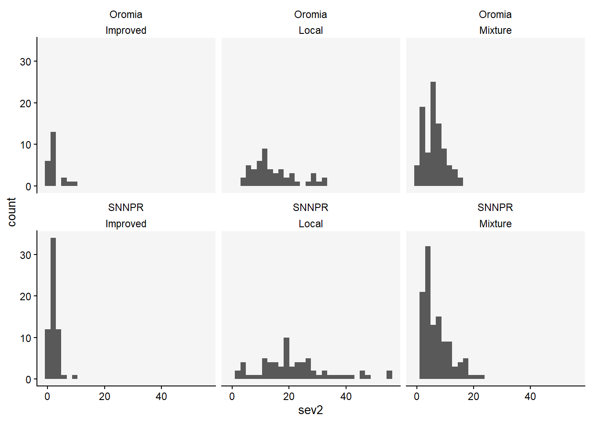
### mudando o design
df|>
ggplot(aes(x=sev2))+
geom_histogram()+
facet_grid(region ~ cultivar)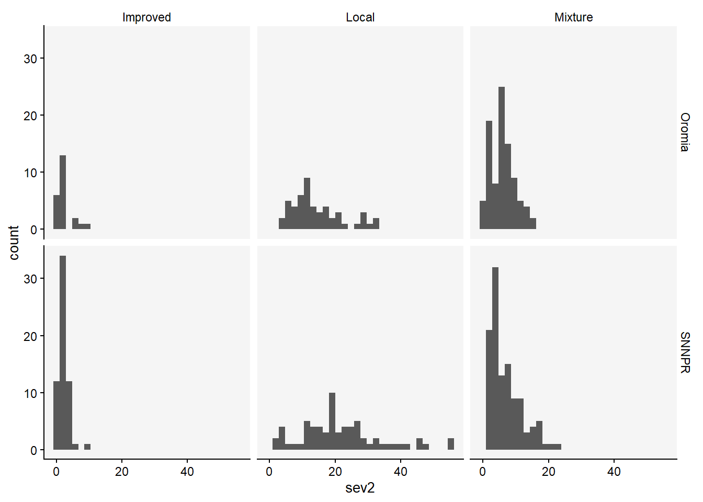
#troca da estética
df|>
ggplot(aes(x=sev2, fill= region))+
geom_histogram()+
facet_wrap(region ~ cultivar)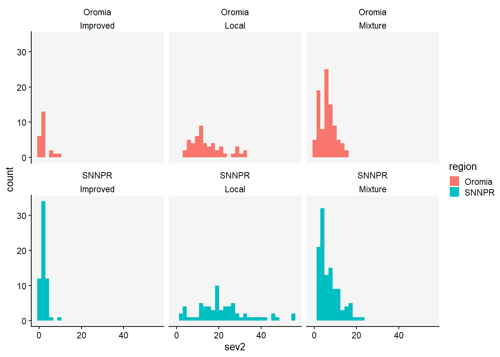
## trocando a cor visualmente e inserindo legenda
df|>
ggplot(aes(x=sev2, fill= region))+
geom_histogram(color = "white" )+
facet_wrap(region ~ cultivar, ncol= 6)+
scale_fill_manual(values = c("darkred", "grey20"))+
theme(legend.position = "bottom")+
labs(y = "Frequency",
x = "severity (%)", fill = "Region")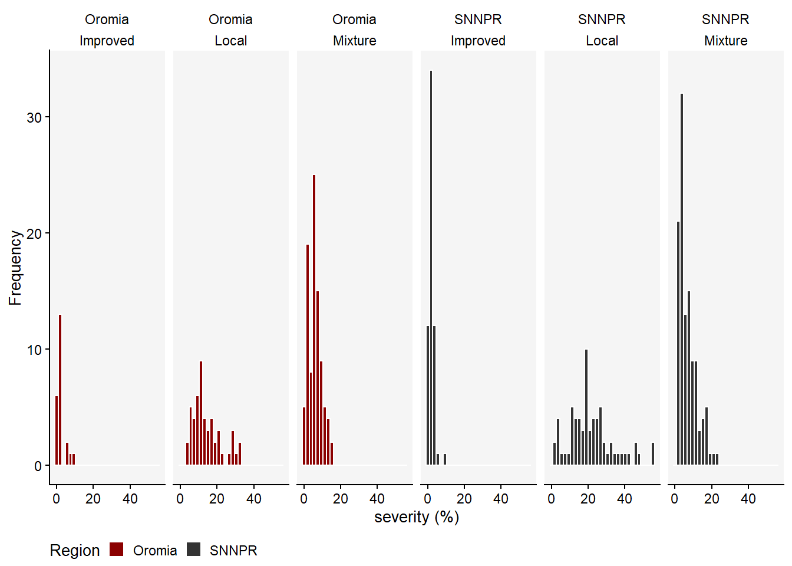
criação de subconjunto com o de select e filter do pacote dply para seleção de conjunto e filtragem de linhas
df2<-df|>
select(farm, region, cultivar, sev2)
#filtragem deteminadas linhas da minha coluna
df_oromia<-df|>
select(farm, region, cultivar, sev2)|>
filter(region=="Oromia")
df_oromia# A tibble: 165 × 4
farm region cultivar sev2
<dbl> <chr> <chr> <dbl>
1 286 Oromia Mixture 7.63
2 287 Oromia Mixture 9.39
3 288 Oromia Mixture 1.30
4 289 Oromia Mixture 9.79
5 290 Oromia Local 18.5
6 291 Oromia Mixture 13.2
7 292 Oromia Mixture 5.60
8 293 Oromia Mixture 1.06
9 294 Oromia Local 17.6
10 295 Oromia Mixture 15.4
# ℹ 155 more rowsdf_SNNPR<-df|>
select(farm, region, cultivar, sev2)|>
filter(region=="SNNPR")
df_SNNPR# A tibble: 240 × 4
farm region cultivar sev2
<dbl> <chr> <chr> <dbl>
1 1 SNNPR Local 55.6
2 2 SNNPR Mixture 17.9
3 3 SNNPR Mixture 8.25
4 4 SNNPR Local 46.1
5 5 SNNPR Local 12.3
6 6 SNNPR Mixture 19.9
7 7 SNNPR Mixture 11.9
8 8 SNNPR Local 55.6
9 9 SNNPR Local 11.6
10 10 SNNPR Mixture 11.4
# ℹ 230 more rowsviasualização dos subconjuntos
plot1 <- df_oromia|>
ggplot(aes(cultivar, sev2, fill = cultivar))+
geom_boxplot()+
labs(title = "Oromia",
Y = "severity (%)")
plot1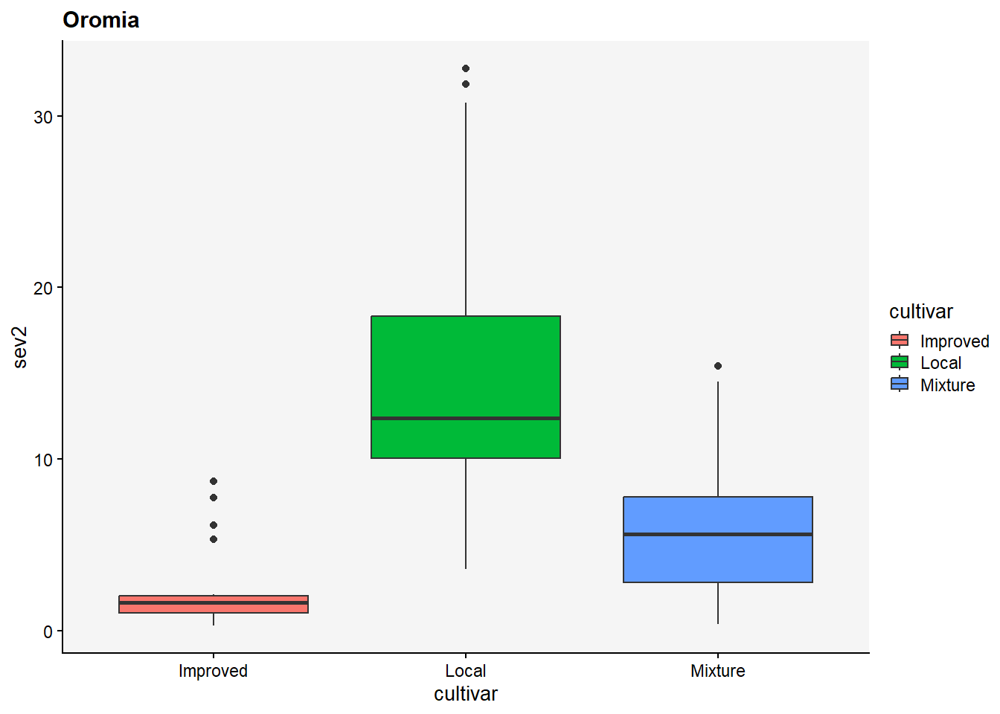
plot2 <- df_SNNPR|>
ggplot(aes(cultivar, sev2, fill = cultivar))+
geom_boxplot()+
labs(title = "SNNPR",
Y = "severity (%)")
plot2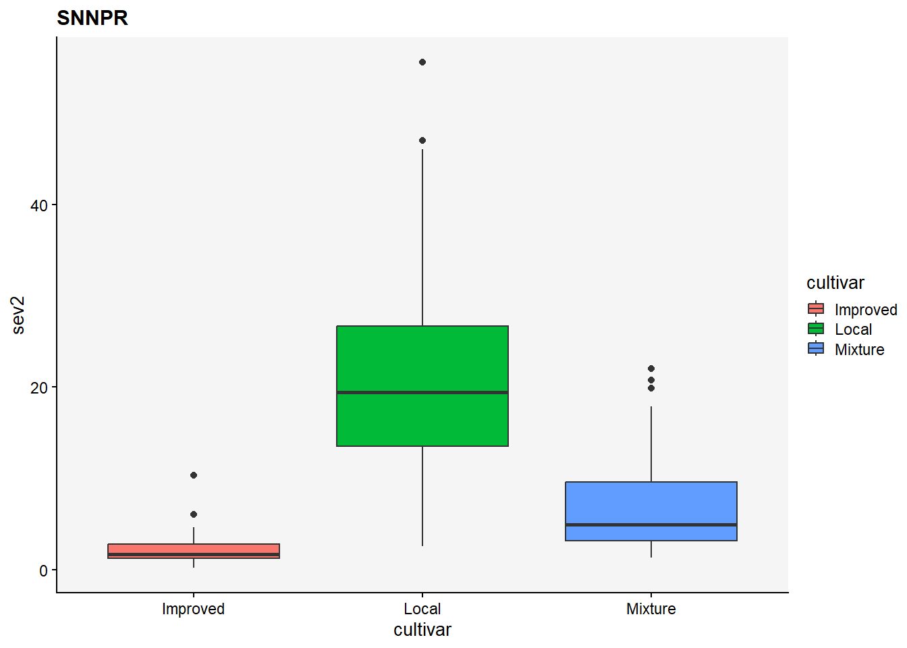
# plot de um gráfico ao lado do aoutro
library (patchwork)
plot1|plot2
#ou
plot1+plot2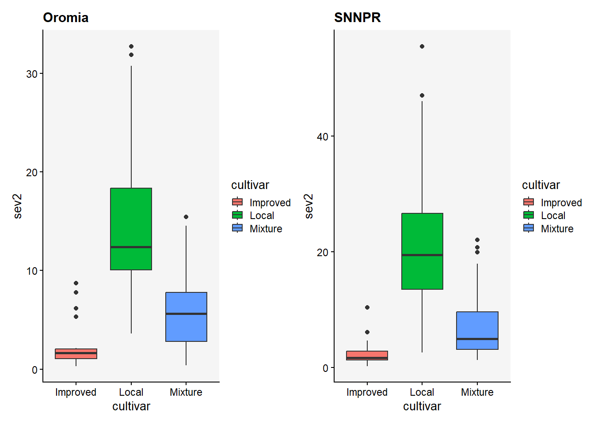
#um embaixo do outro
plot1/plot2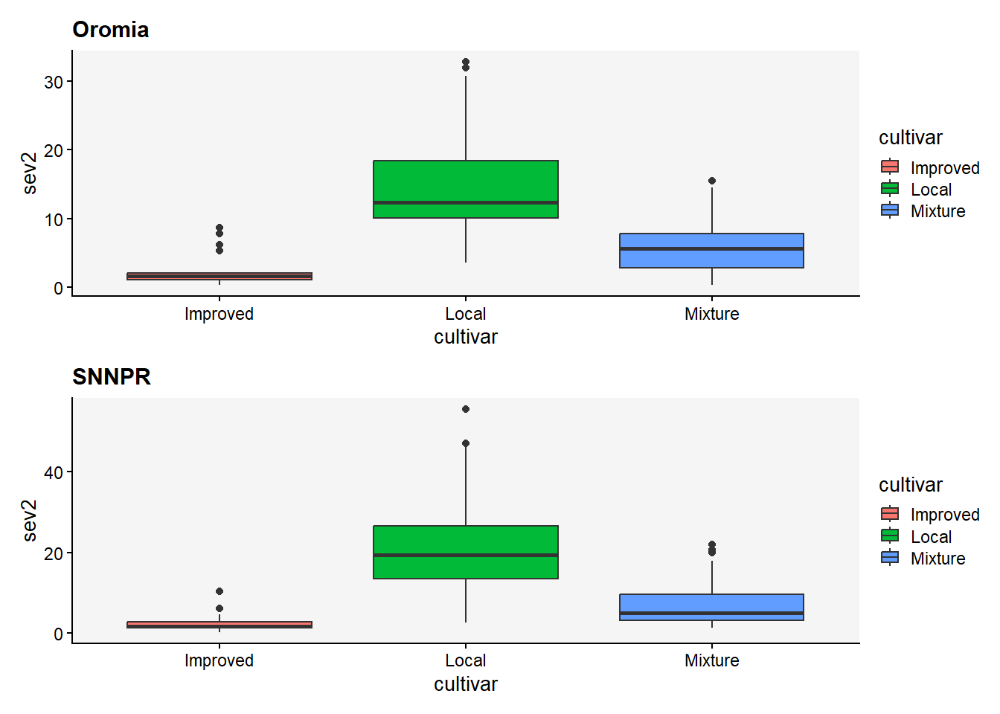
#junta em uma legenta apenas
(plot1 | plot2)+
plot_layout(guides = "collect")+
plot_annotation(tag_level = "A")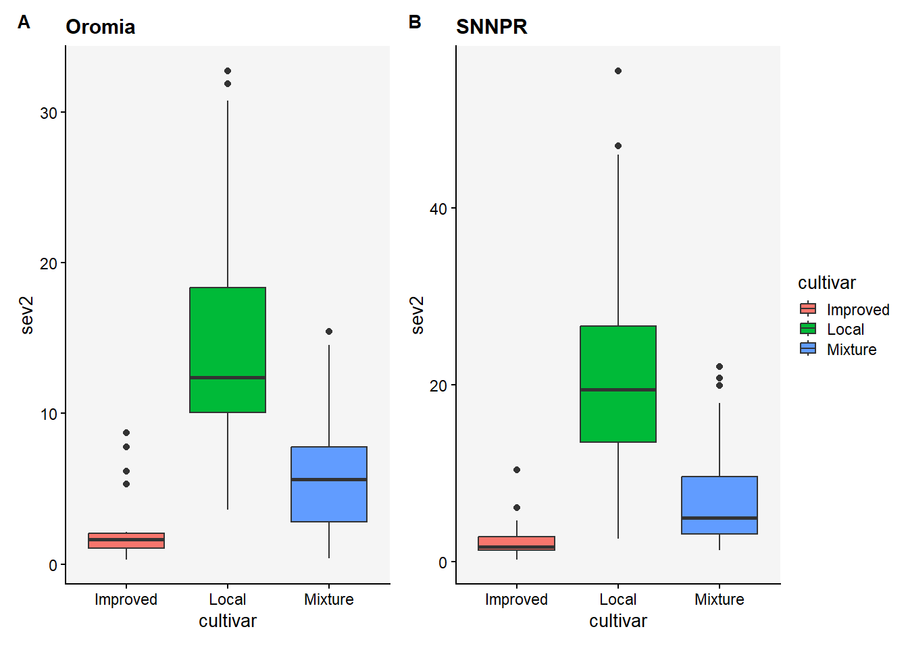
#inverter a rotação
plot1 <- df_oromia|>
ggplot(aes(cultivar, sev2, fill = cultivar))+
geom_boxplot()+
labs(title = "Oromia", x= "",
Y = "severity (%)")+
coord_flip()
plot1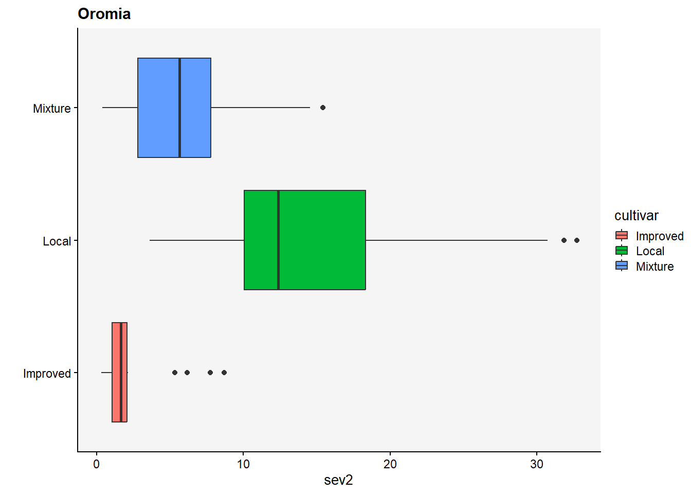
plot2 <- df_SNNPR|>
ggplot(aes(cultivar, sev2, fill = cultivar))+
geom_boxplot()+
labs(title = "SNNPR", x = "",
Y = "severity (%)")+
coord_flip()
plot2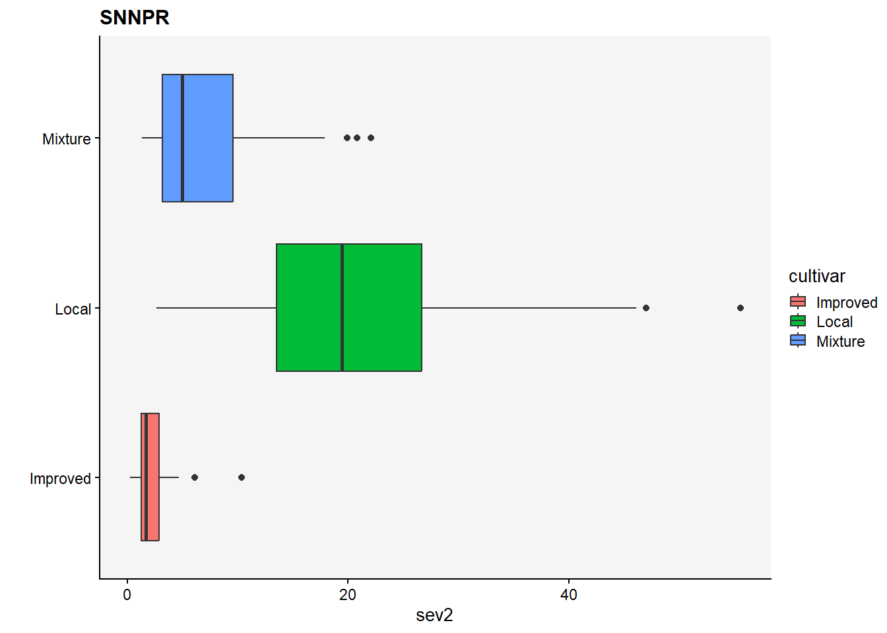
(plot1 / plot2)+
plot_layout(guides = "collect",
axes = 'collect')+
plot_annotation(title = "Coffea Rust in Ethiopia", tag_level = "A", caption = "source: Leonardo Packer de Quadros (2024)")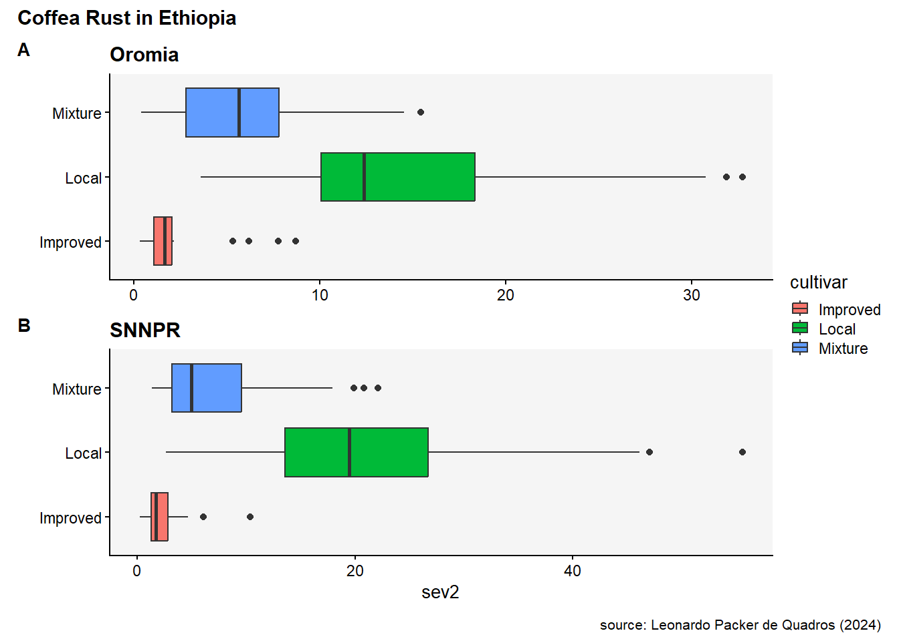
Desafio 2
Desafio de realizar uma análise exploratória dos dados de notas dos alunos referentes as provas 1 e 2 da disciplina de Análise e observação dos dados, se utilizando do conhecimento já gerado até o presente momento
1 Carregar o data.frame
df <- gsheet2tbl("https://docs.google.com/spreadsheets/d/1bq2N19DcZdtax2fQW9OHSGMR0X2__Z9T/edit#gid=1092065531")
df# A tibble: 44 × 3
prova pontos nota
<dbl> <dbl> <dbl>
1 1 10 71.4
2 1 13 92.9
3 1 12 85.7
4 1 6 42.9
5 1 14 100
6 1 12 85.7
7 1 14 100
8 1 8 57.1
9 1 14 100
10 1 10 71.4
# ℹ 34 more rows2 Entendimento da variável do data.frame importado
glimpse(df)Rows: 44
Columns: 3
$ prova <dbl> 1, 1, 1, 1, 1, 1, 1, 1, 1, 1, 1, 1, 1, 1, 1, 1, 1, 1, 1, 1, 1, …
$ pontos <dbl> 10, 13, 12, 6, 14, 12, 14, 8, 14, 10, 10, 13, 9, 14, 9, 14, 12,…
$ nota <dbl> 71.40, 92.90, 85.70, 42.90, 100.00, 85.70, 100.00, 57.10, 100.0…3 Explorar os dados, através da retirada de parâmetros de estatistica descritiva, com a função summarise
df_1 <- df|>
group_by(prova)|>
summarise(
mean_nota = mean (nota),
sd_nota = sd (nota),
var_nota = var (nota),
n = n (),
se_nota = (sd_nota/ sqrt (n)),
ci = se_nota * qt(0.025, df = 9))
df_1# A tibble: 2 × 7
prova mean_nota sd_nota var_nota n se_nota ci
<dbl> <dbl> <dbl> <dbl> <int> <dbl> <dbl>
1 1 79.5 19.0 361. 22 4.05 -9.16
2 2 79.3 19.7 388. 22 4.20 -9.50Análise 1: Através dos parâmetro de estatística descritiva de nota em função da prova, foi possível observar que numericamente os alunos obtiveram melhor desempenho na prova 1, apresentando melhor média. Na mesma prova os alunos mosytraram resultados mais semelhantes, ou seja, foi visto menos dispersão das notas, se comparando os parâmetros de variância, erros padrão da média e desvio padrão. Contudo para melhor visualização, procederemos com análises gráficas destas distribuições para melhor conclusão dos resultados.
Gráfico Box plot para visualização gráfica dos resultados entre as provas
df |>
ggplot(aes(x = as.factor(prova), y = nota)) +
geom_boxplot() +
geom_jitter(color = "steelblue", fill = "steelblue", alpha = 0.5, width = 0.15, shape = 21, stroke = 0, size = 3) +
scale_y_continuous(breaks = c(0, 20, 40, 60, 80, 100), limits = c(0, 105), expand = c(0.00, 0.00)) +
labs(title = "Notas das provas de Análise de Dados", caption = "Fonte: Leonardo", x = "Prova", y = "Nota normalizada", family = "Arial", color = "black", size = 12)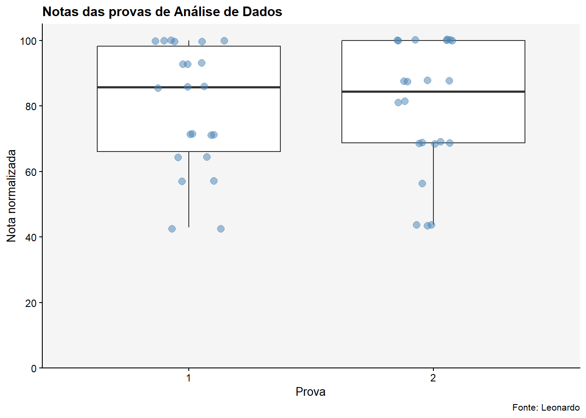
Análise 2: Através do gráfico de Box plot, expressão gráfica ideal para visualizar e dispersão dos dados, foi possível concluir que em ambas as provas os alunos obtiveram semelhantes resultados, com leve sucesso maior na primeira em relação a segunda prova, o que já era esperado segundo a análise anterior. É possível observar que a mediana das notas foi superior a média em ambas as provas, o que pode vir a mostar uma distribuição não tão assimétrica na curva de Gauss para verificação de homocedacidade. O 3º e 4º quartil foram menores em extensão, mostrando que muitos alunos obtiveram excelentes resultados em mabas as provas. Contudo ainda não se têm muitas informações da tendência das notas.
Gráfico de Histograma
# Filtando os dados das provas
notas1 <- df %>%
select(prova, nota) %>%
filter(prova == "1")
notas1# A tibble: 22 × 2
prova nota
<dbl> <dbl>
1 1 71.4
2 1 92.9
3 1 85.7
4 1 42.9
5 1 100
6 1 85.7
7 1 100
8 1 57.1
9 1 100
10 1 71.4
# ℹ 12 more rowsnotas2 <- df %>%
select(prova, nota) %>%
filter(prova == "2")
notas2# A tibble: 22 × 2
prova nota
<dbl> <dbl>
1 2 81.2
2 2 68.8
3 2 87.5
4 2 87.5
5 2 87.5
6 2 100
7 2 100
8 2 100
9 2 100
10 2 43.8
# ℹ 12 more rows# Retirando a média das notas da prova
media_1 <- notas1|>
group_by(prova)|>
summarise(
mean_nota = mean (nota))
media_1# A tibble: 1 × 2
prova mean_nota
<dbl> <dbl>
1 1 79.5media_2 <- notas2|>
group_by(prova)|>
summarise(
mean_nota = mean (nota))
media_2# A tibble: 1 × 2
prova mean_nota
<dbl> <dbl>
1 2 79.3#Plotando os histogramas
plot1 <- ggplot(data = notas1, aes(x = nota, fill = factor(prova))) +
geom_histogram(binwidth = 10, alpha = 0.7, width = 2) +
scale_fill_manual(values = c("grey20")) +
coord_cartesian(xlim = c(0, 100), ylim = c(0, 10)) +
labs(y = "Frequência", x = "Nota", family = "Arial", color = "black", size = 12) +
annotate("text", x = 50, y = 10, label = "Prova 1", family = "Arial", color = "black", size = 5)
plot1 <- plot1 +
geom_vline(xintercept = 79.54545, linetype = "dashed", color = "black", size = 1) +
annotate("text", x = 79.54545, y = 5, angle = 90, label = "Média = 79.54545", vjust = 1.5, hjust = -0.5, color = "black", size = 4) +
theme(legend.position = "none")
plot1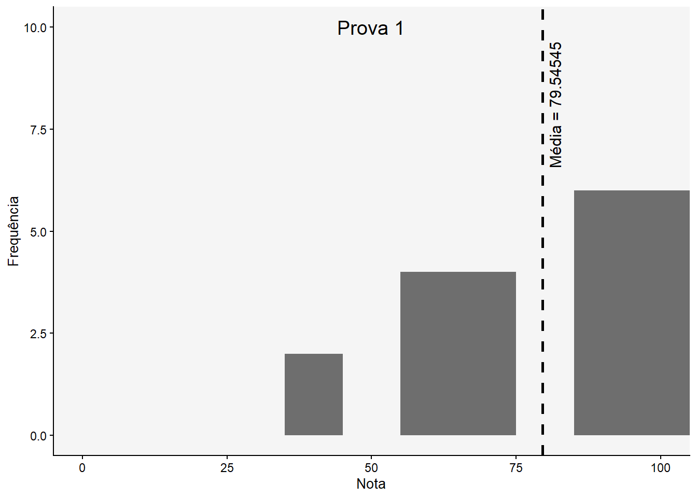
plot2 <- ggplot(data = notas2, aes(x = nota, fill = factor(prova))) +
geom_histogram(binwidth = 10, alpha = 0.7, width = 2) +
scale_fill_manual(values = c("darkred")) +
coord_cartesian(xlim = c(0, 100), ylim = c(0, 10)) +
labs(y = "Frequência", x = "Nota", family = "Arial", color = "black", size = 12) +
annotate("text", x = 50, y = 10, label = "Prova 2", family = "Arial", color = "black", size = 5)
plot2 <- plot2 +
geom_vline(xintercept = 79.26136 , linetype = "dashed", color = "black", size = 1) +
annotate("text", x = 79.26136 , y = 5, angle = 90, label = "Média = 79.26136", vjust = 1.5, hjust = -0.5, color = "black", size = 4) +
theme(legend.position = "none")
plot2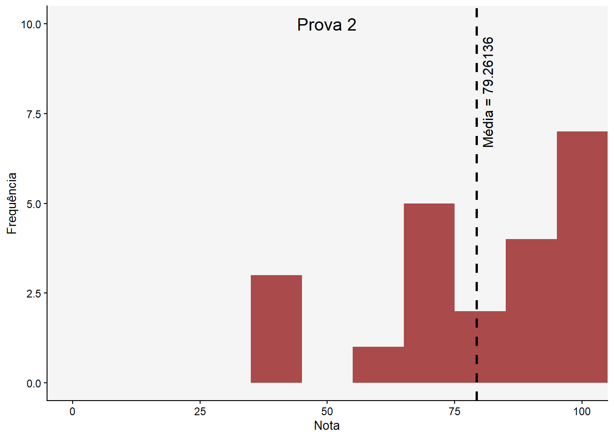
# Juntando os gráficos
plot1|plot2 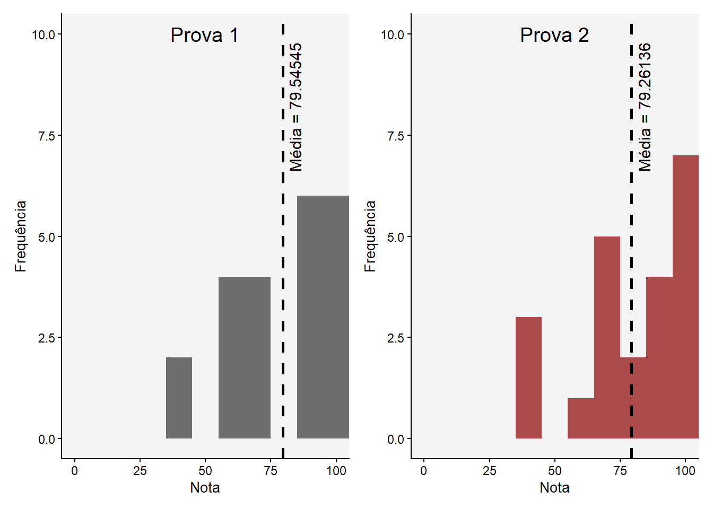
Análise 3: Como analisado anteriormente, pode-se ver que grande parte dos alunos obtiveram bons resultados. Com este gráfico de histograma, ideal para análise de tendencia de frequências, é possível reafirmar que os alunos foram melhor na primeira prova, mas que contudo, não houve muita diferença na tendêcia destas notas, havendo um aspecto muito semelhante.Pode-se afirmar que na segunda prova houve maior amplitude entre as notas, havendo maior frequência de notas menores e maiores que na primeira prova, as quais as notas foram mais homogêneas.
Análise da Tendência Geral da turma
df_1 <- df|>
summarise(
mean_nota = mean (nota),
median_nota = median (nota))
df_1# A tibble: 1 × 2
mean_nota median_nota
<dbl> <dbl>
1 79.4 85.7plot3 <- df %>%
ggplot(aes(x = nota)) +
geom_histogram(aes(fill = "steelblue"), alpha = 0.7, width = 2) +
scale_fill_manual(values = c("steelblue")) +
scale_x_continuous(breaks = seq(0, 100, by = 25)) +
coord_cartesian(xlim = c(0, 100), ylim = c(0, 10)) +
labs(y = "Frequência", x = "Nota", family = "Arial", color = "black", size = 12)
plot3 <- plot3 +
geom_vline(xintercept = 79.40341 , linetype = "dashed", color = "black", size = 1) +
annotate("text", x = 79.40341 , y = 5, angle = 90, label = "Média = 79.40341", vjust = 1.5, hjust = -0.5, color = "black", size = 4) +
geom_vline(xintercept = 85.7 , linetype = "dashed", color = "black", size = 1) +
annotate("text", x = 85.7 , y = 5, angle = 90, label = "Mediana = 85.7", vjust = 1.5, hjust = -0.5, color = "black", size = 4) +
theme(legend.position = "none")
plot3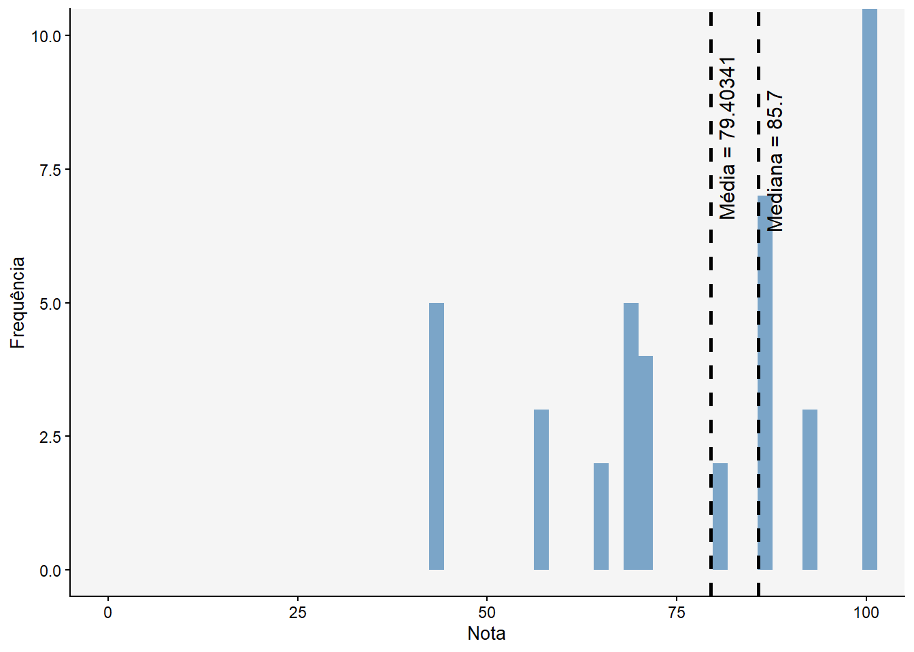
Análise 4: Por fim, realizando uma análise da tendência geral da turma, é possível observar que a média, aqui, não foi uma parâmetro descritivo muito bom. Ao lugar dela, seria mais ideal utilizarmos o parâmetro mediana para a etatística descritiva. Quando olhamos a tendência geral das notas da turma, pode-se ver as menores e maiores notas se sobressaem mais em relação as notas centrais em comparação com as tendências das notas das provas individuais.